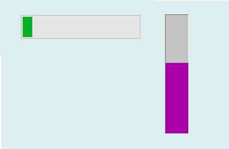

进度条控件主要用于指示某项任务的完成进程，其图形显示效果如下：

在Python程序GUI界面中创建一个进度条控件的命令为:
hl=dr.DRProgress(win,x,y,w,h,barColor,direction,initvalue)
其中hl是创建时用户设定的变量名。进度条控件有3个属性函数，可用于启动/停止进度条的自动运行，也可以设定和获取进度条的当前值(0-100)。
hl.setValueSingle(0/1)
hl.setPosition(v)
v=hl.getPosition()
数字调节钮控件是从Tkinter的ProcessBar控件继承而来，因此必要时也可以通过Tkinter_ProcessBar控件的属性和方法来对其进行装饰。
更多有关Tkinter_ProcessBar控件的详细用法请参阅Tkinter文献。
.